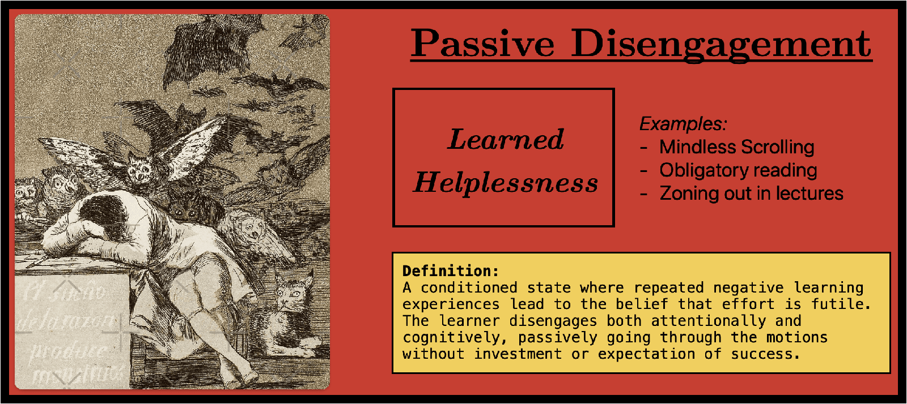

Passive Disengagement [Learn Drive]
Thursday March 13, 2025
Consider this situation:
A student sits in physics class, notebook open but mind elsewhere. Previous attempts to understand the material were met with confusion or criticism, leading them to believe they're "just not a science person." When the teacher asks a question, they don't even attempt to think through it, instead waiting for someone else to answer. They copy notes mechanically without trying to process the information. Homework becomes an exercise in finding the quickest way to complete it rather than an opportunity to engage with their learn drive, reinforcing the cycle of disengagement and passive consumption.

Many children don’t enjoy going to school and yet we convince them that they should. The struggle starts early on in childhood development where schools fail to prepare young learners. As the years go by, many fall behind while others are bored out of the learning process. The design of the schooling system, in my view, hinders what we actually want and promotes what I call “passive disengagement”, a conditioned state of repetitive negative learning experiences that halts the learn drive [1] (our brain's natural tendency to seek new information). This cycle of disengagement and passive consumption of information, I believe, leads many students to develop learning anxiety and learned helplessness, ultimately causing them to disengage from learning altogether.
Take into account how children currently learn in school: teachers deliver standardized curriculum, and students are assessed through exams that don't influence future learning material. A student who performs poorly is still expected to move on to new material and somehow improve on future tests. This practice of advancing students regardless of mastery creates a widening learning gap over time, leading many to learned helplessness—the belief that effort is futile.
On the other hand traditional tutoring typically offers shortcuts and procedures that may improve test scores but fail to build the underlying framework required for true understanding. While these shortcuts may work temporarily, it’s only a patch that will start leaking as the student moves to different topics that require a more fundamental understanding of how these systems interact. This approach promotes passive disengagement as learners “learn” through mindless repetition and practice that doesn’t connect with past knowledge. Learn drive is actively suppressed and motivation is fueled by gamifying the content and doing well on exams.
The consequence of these approaches is what I call passive disengagement. When there's no reward from the learn drive system, and we are not deliberately disengaged, we can identify that the student is in the passive disengagement state. Boredom is heightened and in a healthy system, it should signal that you should seek out new experiences that activate your learn drive. Of course, in a traditional schooling environment, this is not possible, as students are conditioned to tolerate this unproductive boredom. Therefore, training the learn drive is fundamentally about reconnecting with our natural capacity to pay attention. It's not about forcing focus through external rewards or punishments but by creating conditions where focusing becomes intrinsically rewarding.
Next Reading: Active Absorption [Learn Drive]
[1] P. Wozniak, "Learn drive," SuperMemo.guru, 2018. [Online]. Available: https://supermemo.guru/wiki/Learn_drive